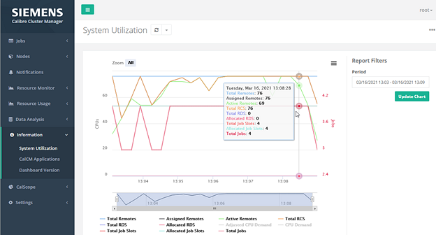
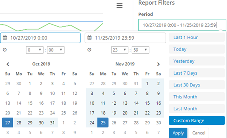
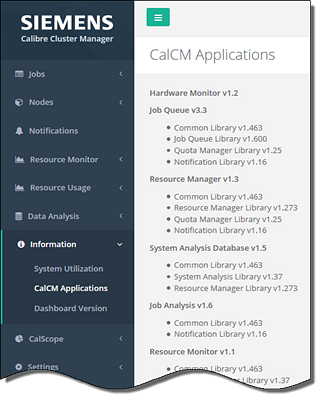
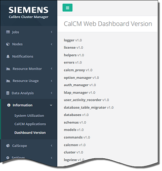

This procedure shows how to access the
system utilization and application information in the CalCM dashboard
web application.
Procedure
- Open a
browser and enter the server name on which the CalCM daemon is running
and the dashboard server port specified in the CalCM configuration
file (calcmd.conf). For example,
DASHBOARDPORT = 9902
enter in the browser,
http://server_name:9902
- Select
the Information menu item in the left pane
of the dashboard.
- Click System
Utilization in the dropdown menu.
This displays a plot with total CPU and RCS information
along with the number of assigned and active remotes, the total
number of job slots and jobs, as well as the allocated RDS and job
slots. You can move the cursor over the plot lines to show the information
at a specific time.
The “Chart context menu” is located in the upper right‑corner
of the plot area of the chart (the three‑bars icon). This menu has
view, print, download, and preference options for the displayed
plot.
Figure 1. System Utilization Information
The “Report Filters” option in the far upper‑right
of the plot window enables you to display information for a selected
time period (the default is current date and time).
Figure 2. Report
Filters
- Click CalCM
Applications in the dropdown menu in the left pane of
the dashboard. This displays a bulleted list of the CalCM application
libraries and versions.
Figure 3. CalCM Applications Information
- Similarly, click Dashboard
Version to display the CalCM Web Dashboard Version information.
Figure 4. CalCM Dashboard Version Information
Results
You have used the Information menu in
the CalCM dashboard to display system utilization and CalCM applications
information.